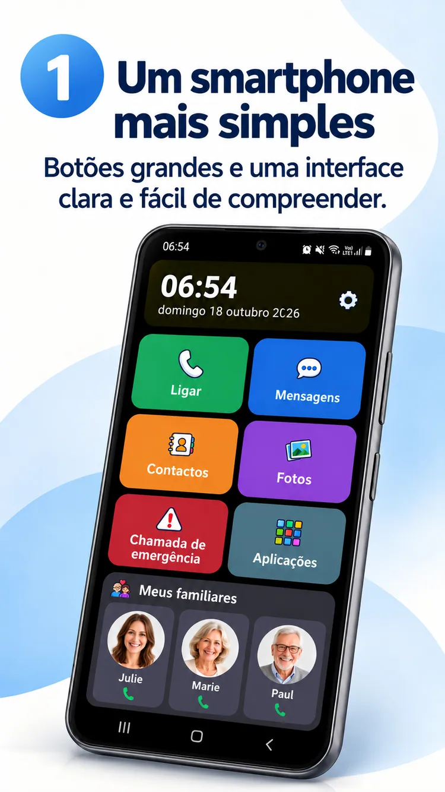

01
Uma foto. Uma chamada.
Os seus mais próximos sempre por perto.

Um ecrã Android mais fácil, as pessoas de quem gosta sempre por perto e mais liberdade para o essencial.
ClikoSpido transforma o ecrã inicial de um Android compatível num espaço claro, familiar e personalizável. Menos dúvidas e mais autonomia.
Botões grandes, ações úteis e espaço para o essencial.

Chamadas, mensagens, contactos, fotografias, câmara e atalho de emergência ao alcance de um toque.
Imagem promocional ilustrativa; a aplicação instalada pode variar.
Os seus mais próximos sempre por perto.
Teclado grande e comandos legíveis.
Fotografias e pesquisa alfabética.
Um familiar pode ajustar o ecrã, escolher aplicações permitidas e proteger definições com PIN.
Veja oito imagens promocionais no seu idioma.

Conheça ClikoSpido num vídeo curto no seu idioma.
Reproduzir vídeoRespostas claras antes de começar.
Sim, em smartphones Android compatíveis como ecrã inicial predefinido.
Não. Pode simplificar um Android compatível que já tem.
Não. O botão Mensagens abre a aplicação habitual de mensagens.
Não. Permite ligar para um contacto configurado, não substitui os serviços de emergência.
Uma interface para simplificar os gestos de todos os dias.
Voltar ao início